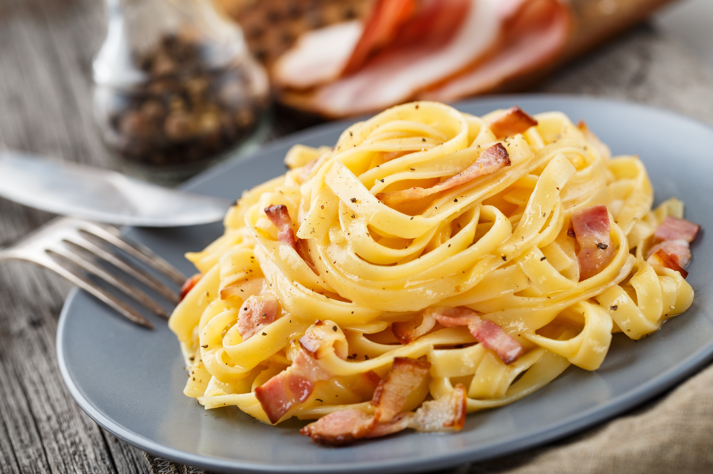

Les petites recettes Italiennes
Recette de Lasagnes

Ingrédients :
- Feuilles de lasagnes
- Viande hachée
- Sauce tomate
- Béchamel
- Fromage râpé
- Épices (sel, poivre, origan, basilic, etc.)
Instructions :
- Faire cuire les feuilles de lasagnes selon les instructions sur l'emballage.
- Faire revenir la viande hachée dans une poêle jusqu'à ce qu'elle soit bien cuite.
- Ajouter la sauce tomate à la viande hachée, assaisonner avec les épices et laisser mijoter.
- Préparer la béchamel selon votre recette préférée.
- Assembler les lasagnes en alternant les couches de feuilles de lasagnes, de sauce à la viande, de béchamel et de fromage râpé.
- Terminer par une couche de fromage râpé sur le dessus.
- Enfourner à 180°C pendant environ 30 minutes, ou jusqu'à ce que le fromage soit doré.
- Sortir du four, laisser refroidir légèrement, puis servir et déguster !
Recette des Pâtes Carbonara

Ingrédients :
- Pâtes (spaghetti, linguine, ou votre choix)
- Lardons
- Œufs
- Fromage pecorino râpé
- Poivre noir moulu
- Facultatif : Ail (pour plus de saveur)
Instructions :
- Faire cuire les pâtes selon les instructions sur l'emballage.
- Faire revenir les lardons dans une poêle jusqu'à ce qu'ils soient croustillants.
- Dans un bol, battre les œufs, ajouter le fromage pecorino râpé et du poivre noir moulu. Mélanger.
- Égoutter les pâtes et les mélanger immédiatement avec les lardons dans la poêle.
- Retirer la poêle du feu et ajouter rapidement le mélange d'œufs et de fromage, en remuant vigoureusement pour enrober les pâtes.
- Le fromage fondra légèrement et créera une sauce crémeuse. Assaisonner avec du poivre noir supplémentaire selon votre goût.
- Facultatif : Ajouter de l'ail sauté pour plus de saveur.
- Servir immédiatement et savourer vos délicieuses pâtes carbonara !